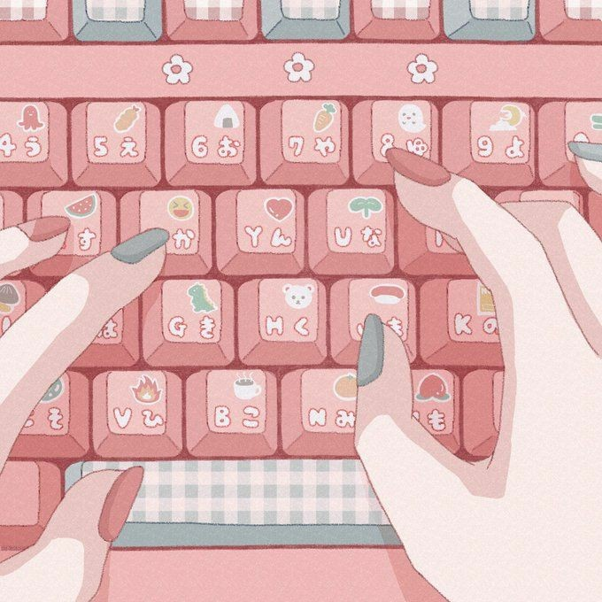

Equality among peers
Equality among peers
 How to limit stress
How to limit stress
 Managing time
Managing time

Ways to unwind
 Blog Post 5
Blog Post 5
 Blog Post 6
Blog Post 6
Blog Post 7
 Blog Post 8
Blog Post 8
 Blog Post 9
Blog Post 9

Equality among peers
Addressing the gender gap in STEM fields is crucial for fostering equality and inclusivity. Research consistently highlights disparities in gender representation and pay gaps, underscoring the need for awareness and action. Organizations dedicated to promoting gender equality and diversity in STEM, such as Go Girl Organization and Code First Girls, play pivotal roles in challenging biases and striving for equal opportunities.
Katherine Johnson, a pioneering African American mathematician, made significant contributions to NASA's space program during the 1960s. Overcoming systemic racial and gender discrimination, Johnson played a crucial role in calculating trajectories for historic missions, including the first American in space and the Apollo 11 moon landing. Her remarkable achievements not only broke barriers in the male-dominated field of aerospace engineering but also served as an inspiration for future generations, highlighting the resilience and brilliance of women in STEM despite the challenges they faced.
Ada Lovelace, often regarded as the world's first computer programmer, made groundbreaking contributions to the field of computing in the 19th century. Collaborating with Charles Babbage, she developed the first algorithm intended for implementation on Babbage's Analytical Engine, a theoretical mechanical general-purpose computer. Lovelace's visionary insights not only laid the foundation for future advancements in computer programming but also established her as a pioneer in STEM, leaving an outstanding impact on the evolution of technology and paving the way for generations of women in computing.

How to limit stress
Navigating STEM subjects can be inherently challenging, often giving rise to academic stress that impacts both mental health and physical well-being. The rigorous demands of these fields can manifest as irritability, anxiety, insomnia, difficulty concentrating, fatigue, constant worry, and memory issues, underscoring the importance of recognizing and addressing stress in STEM studies and careers. Prolonged exposure to stress may not only compromise academic and professional performance but also pose risks to overall well-being.
To counteract these challenges, implementing stress management techniques tailored to STEM studies is crucial. Techniques such as mindfulness, time management, and breaking down complex tasks into smaller, more manageable steps can alleviate the pressure associated with STEM subjects. Additionally, highlighting the significance of self-care practices, including sufficient sleep, proper nutrition, and regular exercise, is essential for maintaining a healthy balance and effectively managing stress in the demanding field of STEM.

Managing time
Time management plays a pivotal role in academic success, professional achievement, and stress reduction, particularly in the dynamic world of STEM. Balancing work and personal life poses a unique challenge in STEM fields, where demands can be both intense and time-consuming. Effective time management strategies, such as creating schedules, setting goals, and breaking tasks into manageable chunks, are essential for navigating the intricate responsibilities associated with STEM studies and careers. For those in education, managing time for attending lectures, completing tutorials, and studying for STEM subjects requires a tailored approach. Additionally, introducing productivity tools and apps like Flora can significantly enhance time management skills, promoting efficiency and focus. Emphasizing the importance of maintaining a balance between academic or work commitments and personal interests, responsibilities, and well-being is critical for fostering a sustainable and fulfilling journey in STEM fields.

Ways to unwind
Prioritizing relaxation and self-care is integral to fostering overall well-being and productivity in STEM fields, where the demands can be intense and challenging. In the fast-paced environment of STEM studies and careers, recognizing the significance of unwinding is crucial for maintaining a healthy work-life balance. Ways to unwind include engaging in hobbies, incorporating regular exercise, practicing mindfulness, and spending quality time with loved ones. Making self-care a priority not only enhances mental and physical health but also contributes to increased focus and creativity in STEM endeavours.
Blog Post 5
Content for Blog Post 5 goes here.
Blog Post 6
Content for Blog Post 6 goes here.
Blog Post 7
Content for Blog Post 7 goes here.
Blog Post 8
Content for Blog Post 8 goes here.
Blog Post 9
Content for Blog Post 9 goes here.